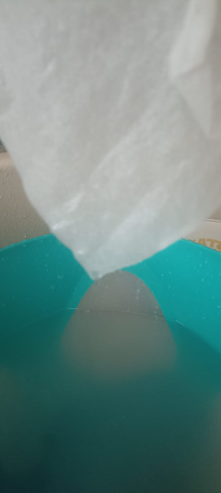
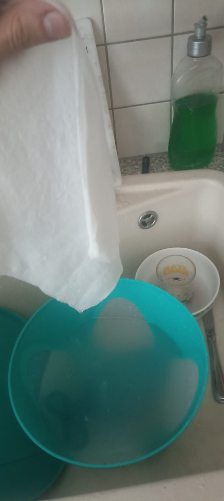
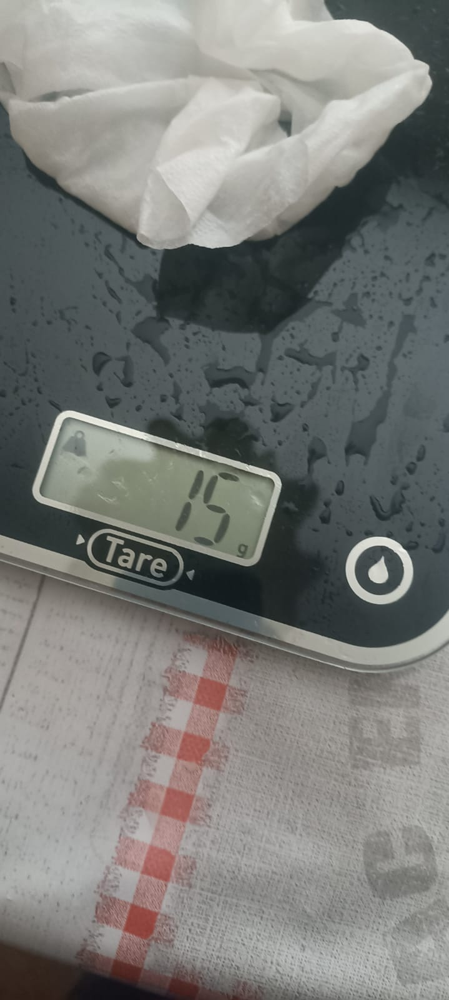
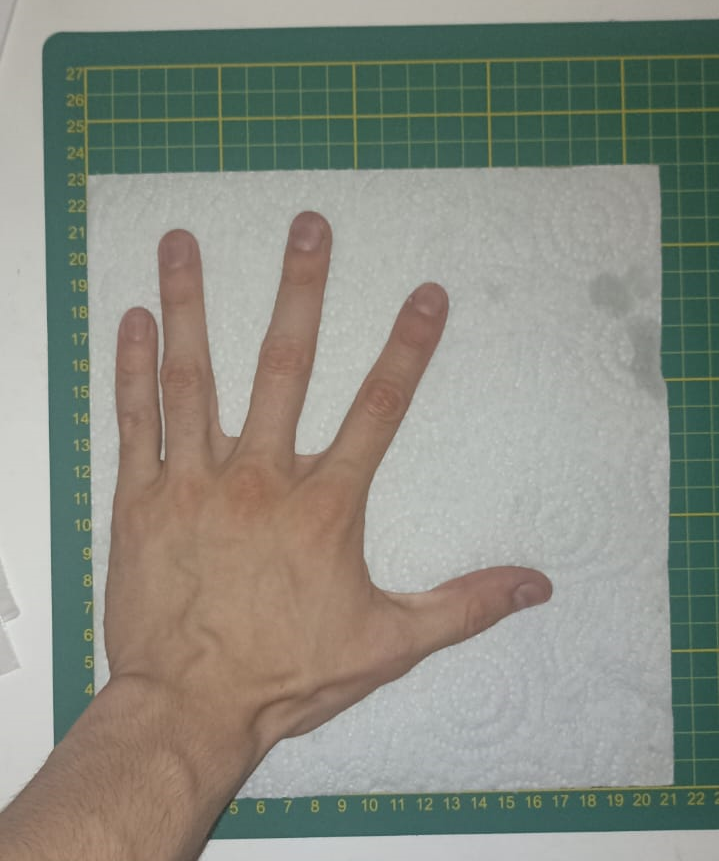
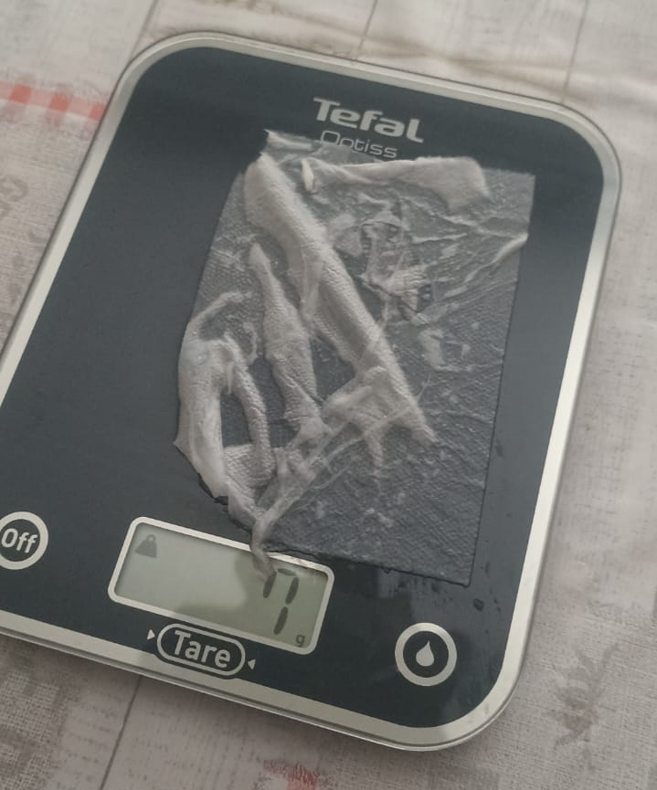
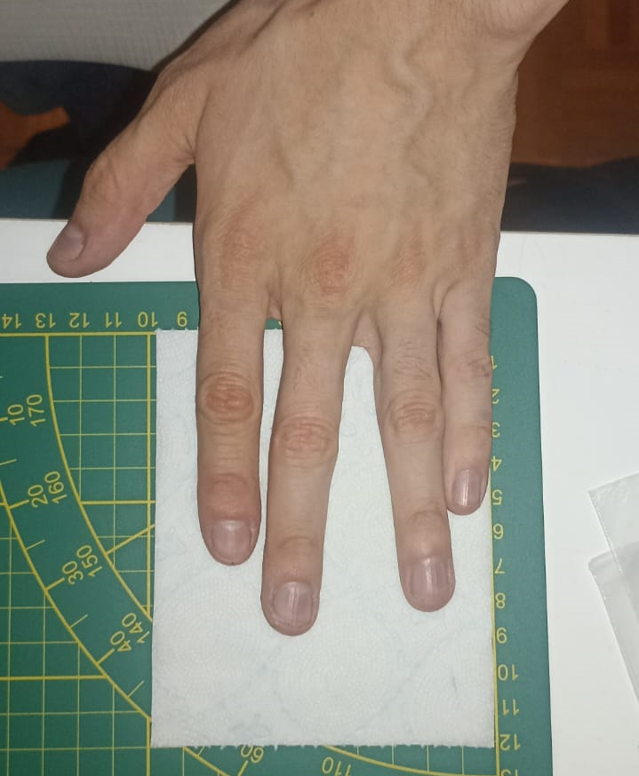
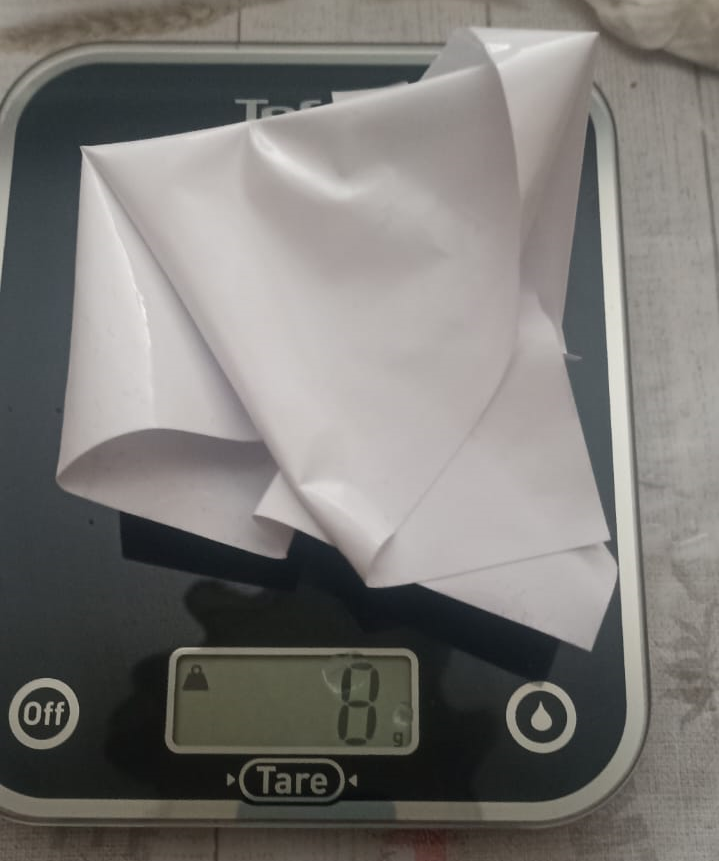

L'objectif de cette page est d'étudier combien d'eau par unité de surface peut supporter par imbibition des matériaux courants (sopalin, papier toilette, papier d'imprimante).
Pour cela j'ai d'abord taré une balance avec le matériau, je l'ai ensuite imbibé d'eau et j'ai attendu que l'eau ne coule presque plus. Presque, car si on attend trop l'eau s'évapore donc j'ai mesuré la masse d'eau retenue avant que l'eau n'arrête de couler. Cela va ainsi nous donner un ordre de grandeur de l'eau retenue par imbibition.
| Matériau | Imbibité (kg/m2) | Résistance |
|---|---|---|
| Sopalin | 0.31 | Super |
| Papier toilette | 0.58 | Nulle |
| Papier d'imprimante | 0.13 | Super |
On tare la balance avec la feuille de sopalin sèche
On imbibe le papier d'eau :


On mesure la masse du sopalin imbibé meau (peu importe si de l'eau tombe à coté car elle a été imbibé au début et est tombée durant la mesure) :

meau = 15 g = 0.015 kg
Il faut ensuite déterminer la surface de sopalin que l'on a imbibé :

S = hauteur * longueur = 0.23 m * 0.21 m = 0.048 m2
=> imbibition surfacique = meau / S = 0.015 / 0.048 = 0.31 kg/m2
=> Résistance du papier super
On tare la balance avec la feuille de papier toilette sèche
On imbibe le papier d'eau
On mesure la masse du papier toilette imbibé meau (peu importe si de l'eau tombe à coté car elle a été imbibé au début et est tombée durant la mesure) :

meau = 7 g = 0.007 kg
Il faut ensuite déterminer la surface de papier toilette que l'on a imbibé :

S = hauteur * longueur = 0.10 m * 0.12 m = 0.012 m2
=> imbibition surfacique = meau / S = 0.007 / 0.012 = 0.58 kg/m2
=> Néanmoins, la résistance du papier est très limitée (sur la photo on voit bien que le papier se dégrade)
On tare la balance avec la feuille de papier d'imprimante sèche
On imbibe le papier d'eau
On mesure la masse du papier d'imprimante imbibé meau (peu importe si de l'eau tombe à coté car elle a été imbibé au début et est tombée durant la mesure) :

meau = 8 g = 0.008 kg
Il faut ensuite déterminer la surface de papier toilette que l'on a imbibé :
Feuille A4 : 29.7 cm x 21 cm
S = hauteur * longueur = 0.297 m * 0.21 m = 0.062 m2
=> imbibition surfacique = meau / S = 0.008 / 0.062 = 0.13 kg/m2
=> Résistance du papier super